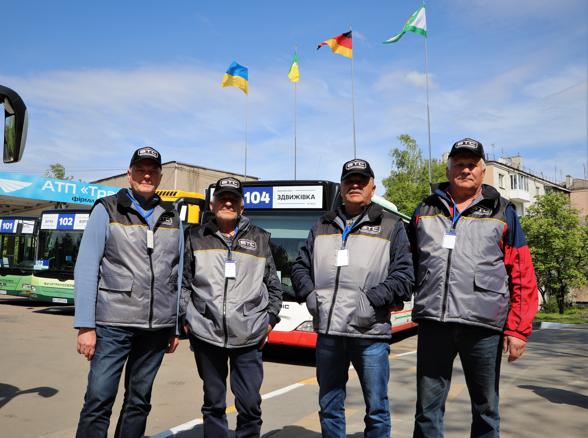
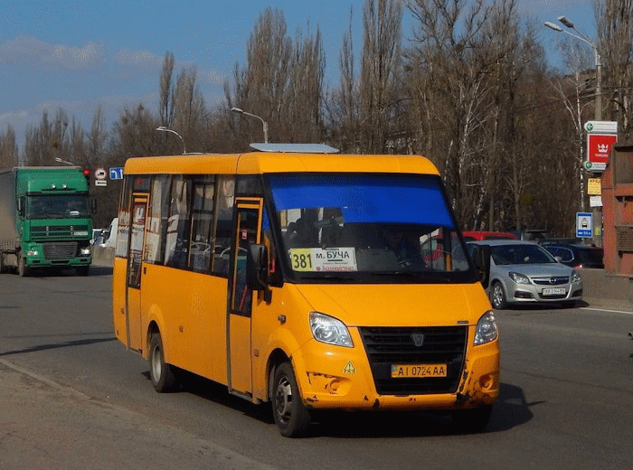
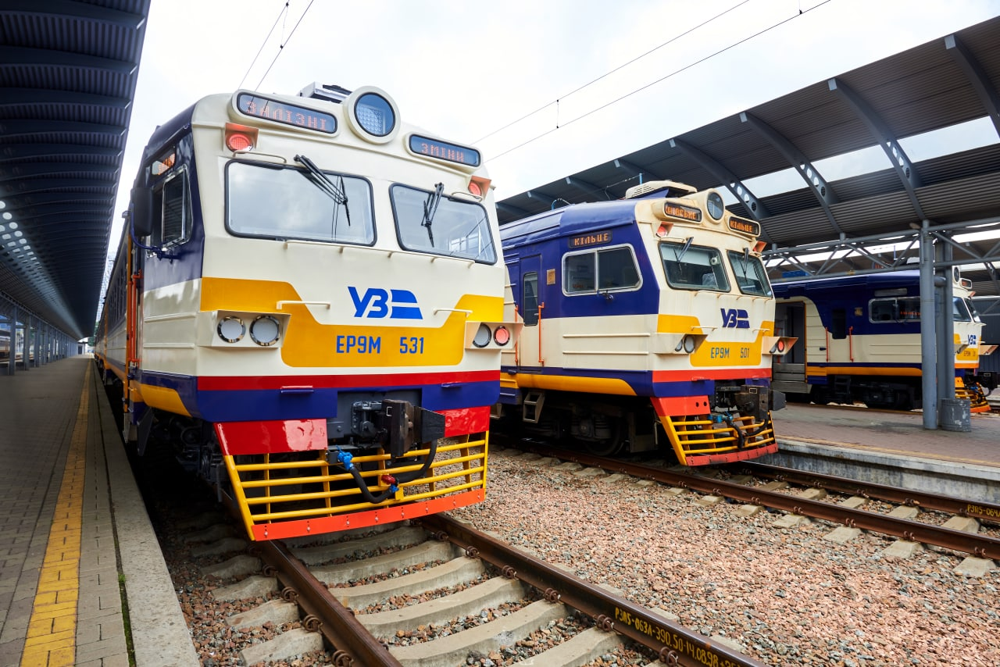
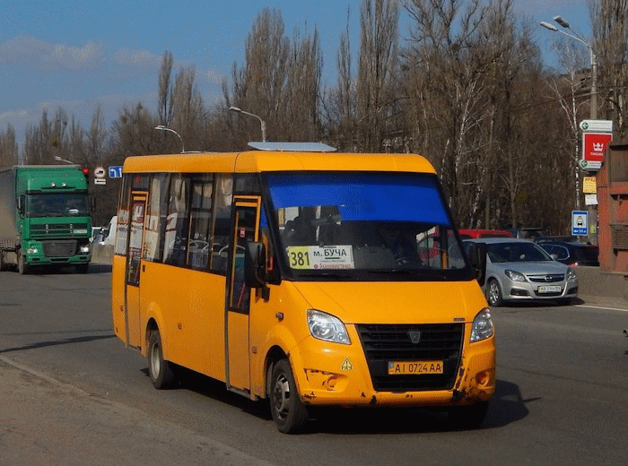
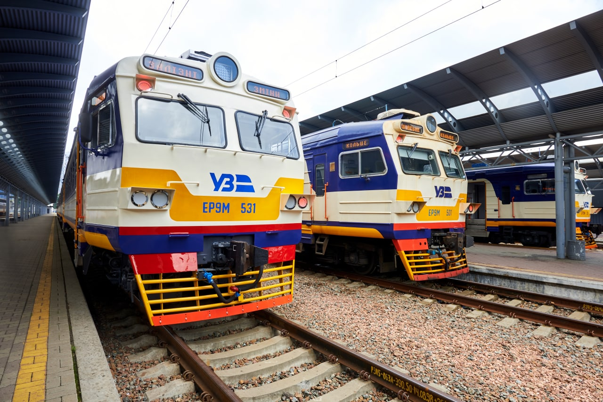
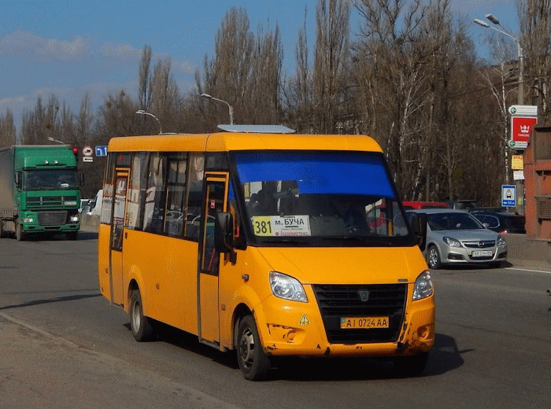
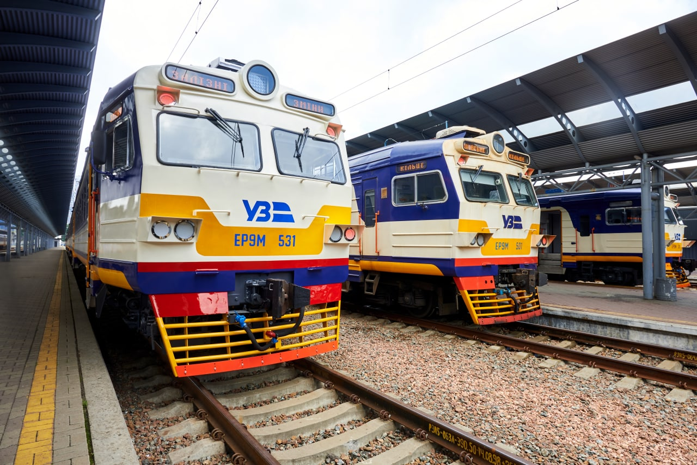

Bucha Pay
Хто ми: Bucha Pay — сучасний комерційний сервіс для мешканців міста Буча, створений, щоб зробити пересування по місту максимально зручним і комфортним.
Наш сервіс: Ми дозволяємо купувати електронні квитки для маршруток, автобусів та поїздів, а також переглядати актуальний розклад громадського транспорту в режимі реального часу.
Наша мета: Ми прагнемо зробити поїздки швидкими, безготівковими та без зайвих черг, забезпечуючи мешканцям та гостям міста надійний інструмент для планування маршрутів.
Переваги: Зручність, ефективне користування громадським транспортом, економія часу та приємні, безпечні поїздки для всіх користувачів.

 





Часті питання
Для поїздки в міському транспорті обов'язково мати квиток або електронний проїзний. Для студентів та пенсіонерів потрібні відповідні посвідчення для отримання знижки. Водії можуть попросити показати документ під час перевірки.
Малий багаж, як сумки та рюкзаки, дозволено перевозити без обмежень. Великі предмети або спортінвентар (велосипеди, лижі, великі коробки) потрібно перевозити у спеціально відведених місцях або за попереднім узгодженням з водієм. Пам’ятайте про безпеку інших пасажирів.
Розклад доступний на офіційному сайті в розділі "Маршрутна карта". Також можна перевірити розклад через сайт Thebuchacity або на зупинках.
Якщо транспорт затримується, спробуйте перевірити інформацію на сайті або в мобільному додатку. Також можна зателефонувати на гарячу лінію диспетчерської служби. В екстрених випадках рекомендуємо користуватися альтернативними маршрутами або іншим видом транспорту.
Ні, проїзний діє лише у муніципальних автобусах Бучатранссервіс
Так, учні, студенти, пенсіонери та особи з інвалідністю мають право на знижки або безкоштовний проїзд. Для отримання пільг потрібні відповідні документи, які підтверджують статус пасажира. Перевірка може проводитися при посадці або під час контролю квитків.
У випадку втрати квитка або електронного проїзного потрібно звернутися до служби підтримки або каси. Квиток можна поновити, зайшовши через обліковий запис на сайті, якщо він зареєстрований та не був прокомпостований у транспорті. На деякі види квитків відновлення може бути неможливе, тому рекомендується зберігати їх уважно.
Ви можете надіслати скаргу або пропозицію через форму зворотного зв’язку на сайті, написати на email диспетчерської служби або зателефонувати на гарячу лінію. Всі звернення обробляються протягом 1–3 робочих днів. У формі вказуйте деталі проблеми та контакт для зворотного зв’язку.